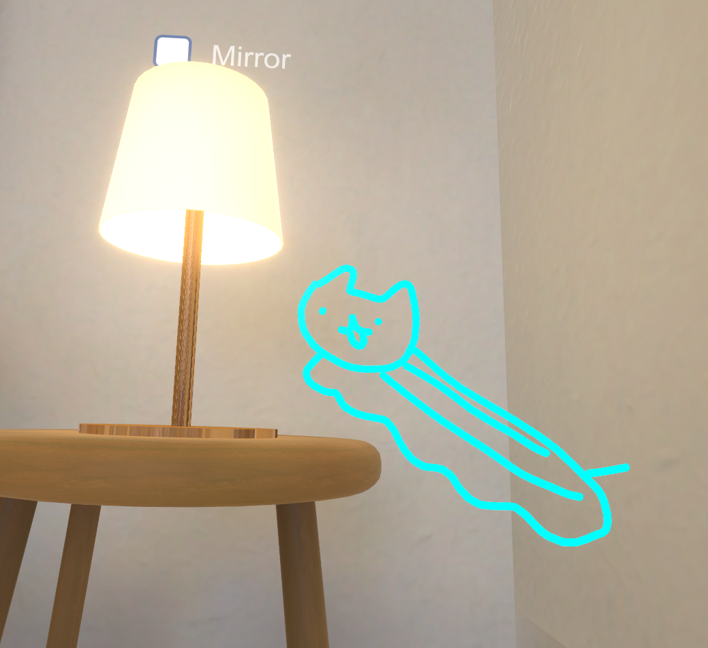

| イエネコナメクジ | |
|---|---|
| Felis silvestris catus limax | |
|  | |
| 保全状況評価 | |
| 愛玩動物 | |
| Domesticated | |
| 地質時代 | |
| 約9,500年前* - 現世 | |
| 新生代第四期完新世 | |
| 分類 | |
| ドメイン: | Eukaryota |
| 界: | 動物界 Animalia |
| 門: | 脊索動物門 Chordata |
| 亜門: | 脊椎動物亜門 Vertebrata |
| 綱: | 哺乳綱 Mammalia |
| 目: | 食肉目 Carnivora |
| 亜目: | ネコ亜目 Feliformia |
| 科: | ネコ科 Felidae |
| 属: | ネコナメクジ属 Felislimax |
| 種: | Felis silvestrislimax |
| 亜種: | F. s. catus limax |
ネコナメクジ（猫蛞蝓）は、狭義には食肉目ネコ科ネコ属に分類される形状がナメクジに酷似した動物の通称である。
現在まで、ニホンオオネコナメクジとユーラシアオオネコナメクジの二種のみが確認されている。
ネコ科は洗練された体躯を活かした俊敏な動きが特徴だが、ネコナメクジは指が進化したカギムシ状の肢体による、極めてゆっくりとした動きが特徴となっている。
本種の最大の特徴はなんといっても、電脳空間に適応した進化を有史以来初めて実施/観測された種という事である。
種全体として順次電気空間への侵襲が認められており、保全のために国連の下位組織ICA（International Cat Alliance）が、ネットワーク空間上の本種の個体数などの管理活動を行っている。
ネコ科には珍しく、草食性が強い。死肉を食する事があるが、稀である。
ミネラル確保の為に貝殻や岩壁を捕食することがある。
その際、放射性のある物質を好んで捕食するため、常時微量の放射線を放っている。
水との接触により体表の放射性濃度が一時的に安定する可能性が指摘されており、これは彼らが水場を好む理由のひとつであると考えられている。
水中に潜ることもしばしば観測され、体から発される放射線によりチェレンコフ放射が発生し淡く光る。
放射線濃度が高い地域に生息するネコナメクジの睡眠時間は、他地域の個体のそれよりも有意に長くなる傾向がある。
これは前述の放射性物質捕食に際し、通常よりも多い放射性物質を体内に取り込むことで、生体機能に過剰な負荷がかかるためと考えられていた。
だが近年の研究により、これは放射線による細胞損傷を抑制する為ではなく”制御する”ためであることが判明した。
ネコナメクジは通常RNAの損傷させる放射線を、各細胞膜外皮のフィルタ状構造を通すことで選別し、
細胞のアポトーシス遺伝子を抑制する事が判明した。
これにより、放射線濃度が高い地域のネコナメクジは通常よりも長い睡眠時間を必要とする代わり、長命化の傾向がある。
また、観察された個体群の中には、睡眠中に体表から微弱な光を放つ現象が確認されており、この発光は放射線エネルギーを代謝する過程の副産物である可能性が指摘されている。
刺激を受けた時により強くする傾向があるが、面白がって光らせ続けると重篤な放射線障害を被る恐れがある為、むやみに刺激することは避けるべきである。
過去、南米でこの現象を利用した「光るネコナメクジ」としての商業化が試みられた際に、多数の重傷者を出す事件が発生した。
さらに、睡眠時においては脳波に特殊なパターンが現れることがあり、これは人間のレム睡眠に似た状態とは異なる、「超回復睡眠」と仮称されている。この睡眠形態では、通常の何倍もの速度で細胞修復・遺伝子修復が行われると推測され、彼らの異常な長寿とも密接な関係があると見られている。
現在、こうした睡眠と放射線代謝のメカニズムに関する研究は、放射線被曝治療や宇宙空間での長期生存技術への応用を見据え、各国の研究機関によって急速に進められている。
非常に柔軟な体で、頭部がわずかでも通過可能な隙間があれば、ほぼ無抵抗で身体全体を通過させることが可能であり、この能力によって都市部やインフラ構造物への不可解な侵入事例が多数報告されている。
水場を好み、川辺や海辺で徘徊している姿をよく見かけるが、特にテトラポッドの間に挟まって波を感じている姿が良く目撃される。
非常に長寿であり、100年近く生きる個体も存在する。
年齢を重ねるごとに体が大きくなり、最大で1.5m程度に達することもある。
放射線放出の特徴が偶然、光回線を媒介した電子ネットワークへの肉体的アクセスを可能としており、2023年ごろから東アジアを中心として、VRChat等の疑似的3D空間における発見例が急増している。
電脳空間上においてのみ、摂食形態が全く異なり、カニ、ケーキ等の捕食が認められる。
この捕食行為は現実に影響を及ぼしていると考えられており、ハーバー・ボッシュ法に代わる新たな食糧問題へのアプローチとして学会を中心に注目を集めている。
イエネコナメクジは放射線を発生させる特性を持つため、集団で密集させることによりかなりの熱量を発する為、
簡易的な原子炉としての必要要件を満たすことがあり、原子力発電としての利用が期待されている。
ただ、原子炉として利用するには、イエネコナメクジが生体である事による不安定が懸念されており、現状は実験段階にとどまっている。
体内の放射線フィルタリング構造を応用したアポトーシス細胞現象実験が行われており、
人類の夢である所の「不老」の実現に向けた研究が進められている。
また、医療系機器メーカーを中心として放射線治療や放射線検出器の開発にも応用されている。
日本における歴史については、1589年、織田信長の家臣が飼っていた旨の記述がある。名はモケケ。
一説には、明智光秀の謀反はこのネコナメクジのモケケを巡る権力闘争の末に発生したものと言われている。
江戸時代後期、ネコナメクジの飼育が京都を中心に流行した。
流行のピークには、体重と同じ重さの金と交換されていた。
同時期に原因不明の疫病が京都で流行したが、これはネコナメクジの発する放射線の影響によるものと考えられている。
中国における歴史については、殷王朝の甲骨文に「猫蛞蝓」と称されているのが初出であると考えられている。 当時、雨乞いや安産祈願の儀式において「滑る神獣」として祭壇に描かれていた記録が見つかっている。 また、西周時代の青銅器には「螺行獣（らこうじゅう）」という文字が刻まれ、その形状が猫蛞蝓と一致するとの研究もある。
さらに、司馬遷が著した『史記』「滑生列伝」には、猫蛞蝓との接触によって精神的安寧を得た人物についての記述があり、 特に有名なのが「転寝猫蛞蝓撫寝事（てんしんびょうかつゆ ぶしんじ）」という故事である。
この故事は、前漢の文士・陳恕が戦乱の疲弊から心を病み、眠れぬ日々を送っていた際、 庭先に現れた一匹の猫蛞蝓を撫でているうちに自然と心が静まり、そのまま深い眠りに落ちたという逸話に由来する。 陳恕はその体験を「我が魂、柔き背の波に乗りて夢界を渡る」と詩に詠み、 以後、猫蛞蝓を撫でることは「転寝撫行（てんしんぶこう）」として貴族階級の間で流行したと伝わる。
この故事により、猫蛞蝓は中国において「夢境導師（むきょうどうし）」、すなわち夢へ誘う神獣としての信仰を得、 宋代の道教文献『滑従集』では「一撫一夢、再撫即眠（いちぶいちむ、さいぶそくみん）」という記述が残されている。 また、科挙前夜には猫蛞蝓を模した置物を撫でて眠る風習が一部の地域に根付いていたともされている。
最古のネコナメクジの宗教文書への登場は、古代メソポタミア文明にまで遡れる。
シュメールの碑文に「地の上に伏せる猫」として
𒀯𒆷𒄯𒊬（urilima sig）として記されており、災いを防ぐ滑る祈り猫の神とされている。
古代エジプトの女神バステト（Bastet）の原型となった神聖動物は、現在ではネコとされることが一般的であるが、 一部の神話学者や動物宗教史研究者の間では、初期のバステト信仰において祀られていたのはイエネコナメクジであったとする説がある。
紀元前3000年頃のファラオ朝時代初期に見られる象形文字には、猫とナメクジが融合したような形状の神獣が描かれており、
「セケト・ウシャ（Sekhet-Usah）＝滑りし物の御前」という異名で呼ばれていた記録も残っている。
下記にセケト・ウシャのヒエログリフ表記を示す。
しかし、中王国時代以降、ナメクジ的要素を持つ神獣信仰は次第に抑圧され、より身近で可愛らしい姿を持つイエネコがその地位を奪ったとされる。
この変遷は「人類に害をなすネコナメクジの地位をイエネコが簒奪した」という神話的物語に象徴される。
この神話では、ネコナメクジはあまりに強大な癒しの力を有し、人類の精神を支配する危険性があったため、
ラー神の命によりイエネコがそれを追放し、自らが神の座を継承したと伝えられている。
これにより、現在残るバステト像の多くはイエネコの姿となっているが、その影には土着の信仰体系が王権宗教により改変された歴史が垣間見えるという説もある。 また、一部の地下神殿には、今なおナメクジ状の猫神獣が刻まれた壁画が残されているとの噂も存在する。
撫でられると非常に喜びを覚えることが知られており、肉体への脳波計測によって裏付けされた事実であることが分かっている。
具体的には、触覚刺激を受けた際、イエネコナメクジの脳幹部において快感シナプス活性反応によるドーパミン・オキシトシン放出が観測されており、これが本種の異常なまでの撫で志向性を示していると考えられている。
実体として接近・接触した場合には人体に対して中～高レベルの放射性害を与えるため、物理空間においては撫でる行為自体が禁止・規制されている。
進化生物学的に通常のネコ科動物が人間との共生関係の中で愛玩動物として撫でられてきたのに対し、ネコナメクジはその放射線的性質から忌避される歴史を歩んできた。
そのため、種全体が持つ「未撫接のトラウマ」が遺伝子的レベルで蓄積されており、撫でられるという行為に対して異常なまでの快感フィードバックを示すとされる。
一方で、電脳空間（仮想現実内）においてはそのようなリスクは存在せず、むしろ精神衛生・エンタメ・信仰行為の一環として「遭遇したら撫でるべきである」という倫理的共通認識が2023年以降、東アジア文化圏を中心に定着しつつある。
特にVRChatなどの高密度仮想空間においては、ネコナメクジのアバターが出現した場合にプレイヤーが自然と撫でるジェスチャーを行う様子がしばしば観察されている。
これは種全体が発する「撫でてオーラ（Nade Field）」の影響によるものとの分析も存在する。
一部の研究者はこれを「逆共感現象（Inverted Empathy Effect）」と呼び、人間側の撫でたい欲求とナメクジ側の撫でられたい欲求が、電脳空間内で完全に共振する特異現象と位置付けている。
三次元存在体 \( E_3 \subset \mathbb{R}^3 \) のメタバース位相空間 \( \mathcal{M} \) への転移過程は、位相同型写像の一般化に基づき定式化される。まず、\( E_3 \) の構造を持つ自己準同型群 \( \text{Aut}(E_3) \) を考える。これに対し、メタバース側では次元圧縮により、通常の三次元的連続体ではなく、位相的に高次連結性を持つ可縮空間 \( C(\mathcal{M}) \) が設定されている。すなわち、存在体の転移は写像
\[ \Phi: E_3 \to C(\mathcal{M}) \]
により記述され、ここで \( \Phi \) は連続かつ開写像であると仮定するが、同時に \( \Phi \) 自身が時間パラメータ \( t \in [0,1] \) に依存するホモトピー族 \( \{\Phi_t\} \) を形成する。
このとき、各瞬間 \( t \) において存在する構造体 \( E_t = \Phi_t(E_3) \) は、次の条件を満たす必要がある：
すなわち、任意の閉集合 \( K \subset E_t \) に対して存在する連続写像 \( H: K \times [0,1] \to E_t \) が
\[ H(k,0) = k, \quad H(k,1) = p \quad (\exists p \in E_t \text{一定}) \]
を満たす。
また、\( \Phi_t \) の構成には、エネルギー関数 \( \mathcal{E} : \text{Map}(E_3,C(\mathcal{M})) \to \mathbb{R} \) が導入される。これは対象存在体が受ける「抵抗」と「浸透」の複合エネルギーを表し、最小作用の原理に従い
\[ \frac{d}{dt}\mathcal{E}(\Phi_t) \leq 0 \]
が成り立たなければならない。このときのエネルギー関数は具体的には、
\[ \mathcal{E}(\Phi) = \int_{E_3} \left\| d\Phi \right\|^2 \, d\mu \]
により与えられ、ここで \( d\Phi \) は \( \Phi \) の微分、\( \mu \) は \( E_3 \) 上の体積測度である。
加えて、転移過程では自己準同型群 \( \text{Aut}(E_3) \) の作用が \( \Phi \) を通じて変形される必要がある。つまり、存在体の「個性」は
\[ \forall g \in \text{Aut}(E_3),\quad \exists \tilde{g} \in \text{Homeo}(C(\mathcal{M}))\quad \text{such that} \quad \tilde{g} \circ \Phi = \Phi \circ g \]
を満たす拡張写像 \( \tilde{g} \) により保存・反映されなければならない。
さらに、位相的特異点、すなわち転移不可能なポイント群 \( S \subset E_3 \) が存在する場合、それらは \( \Phi(S) \) が \( \mathcal{M} \) 内のノット構造
\[ \kappa: S^1 \hookrightarrow \mathcal{M} \]
に対応する。ここで、\( \kappa \) は絡み目理論における基本的ノット写像であり、メタバース空間内で「自己記憶」として定着する位相的不変量を持つ。
総括すると、転移全体は次の三段階からなる。
この過程を完遂するための必要十分条件は、\( \pi_1(E_3) \cong \pi_1(\mathcal{M}) \)（基本群同型）および、すべての高次ホモトピー群 \( \pi_n(E_3) \) が \( \pi_n(\mathcal{M}) \) と準同型で結ばれていることである。
しかし、現実世界では、対象存在体の位相的完全性は常に保障されておらず、異常写像（anomalous morphism）と呼ばれる欠陥写像
\[ \Phi': E_3 \dashrightarrow \mathcal{M} \]
が生じうる。この場合、\( \Phi' \) は特異点集合 \( S' \subset E_3 \) 上で定義されず、存在体の「断裂的転移 (catastrophic transfer)」を引き起こす。これがいわゆる「断片的メタ存在 (fragmented meta-entity)」の生成機構であり、後述するメタバース上の新たな相互作用体系 \( \mathfrak{I}(\mathcal{M}) \) の起点となる。
三次元の存在（ねこなめくじ：Felis silvestris catus limax）は、単なる「場所移動」ではなく、形を潰してシンプルにまとめたあと、メタバース空間の特別な場所に再配置される、ということ。
そのとき、自分の「個性」や「意識」は、潰した形の中に保存されるように工夫される。
もしこの過程で失敗すると、「断片化した存在」となってしまい、メタバース上でバグったキャラクターのようにふるまう。